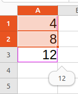

Questions & Answers — AI Course 01Questions & Réponses — Cours IA 01
Introduction to Artificial IntelligenceIntroduction à l'Intelligence Artificielle Explanations in very simple words for students | Explications en mots très simples pour les étudiants
10 ideas with 30 questions and answers10 idées avec 30 questions et réponses
Idée 1 What is Artificial Intelligence?Qu'est-ce que l'Intelligence Artificielle ?
AI is a computer program that can learn, recognize things and make decisions, a bit like a human would. It is not magic: it is based on data and rules.
L'IA est un programme informatique qui peut apprendre, reconnaître des choses et prendre des décisions, un peu comme un humain. Ce n'est pas de la magie : c'est basé sur des données et des règles.
Q1. What is AI in one sentence?
R1. AI is a computer program that can learn from data and make decisions by itself.
Q1. Qu'est-ce que l'IA en une phrase ?
R1. L'IA est un programme informatique qui peut apprendre à partir de données et prendre des décisions tout seul.
Q2. Is AI a robot?
R2. Not always. AI is software. A robot is a machine that can move, and a robot can contain AI.
Q2. L'IA est-elle un robot ?
R2. Pas toujours. L'IA est un logiciel. Un robot est une machine qui peut bouger, et un robot peut contenir de l'IA.
Q3. Does AI think like a human?
R3. No. AI imitates some human tasks, like recognizing or deciding, but it does not feel or understand the way a human does.
Q3. L'IA pense-t-elle comme un humain ?
R3. Non. L'IA imite certaines tâches humaines, comme reconnaître ou décider, mais elle ne ressent pas et ne comprend pas comme un humain.
DataExemples
Données
The rules it findsRégularités
Les règles qu'il trouve
On a new caseUne réponse
Sur un cas nouveau
Idée 2 How does AI work, in simple words?Comment l'IA travaille-t-elle, en mots simples ?
An AI program is given a very large number of examples, each one already labelled with the right answer. It looks for the rule that links them, then applies that rule to cases it has never seen. Nobody writes all the rules by hand: the program finds them by itself. And it does not really understand — it recognises shapes and statistics, not meaning. That is exactly why you must always check what it gives you.
Un programme d'IA reçoit un très grand nombre d'exemples, chacun déjà étiqueté avec la bonne réponse. Il cherche la règle qui les relie, puis il applique cette règle à des cas qu'il n'a jamais vus. Personne n'écrit toutes les règles à la main : le programme les retrouve lui-même. Et il ne comprend pas vraiment : il reconnaît des formes et des statistiques, pas du sens. C'est précisément pour cela qu'il faut toujours vérifier ce qu'il vous donne.
Q1. Is AI like Excel?
R1. Much more than you might think. In Excel you put 4 in a cell and 8 in the next one, then you drag the small handle at the bottom-right corner, and Excel works out 12 all by itself. An AI does the same thing with examples: you give it two cases, it finds the rule that links them, then it applies the rule to the next one.
Q1. Est-ce que l'IA ressemble à Excel ?
R1. Bien plus qu'on ne le croit. Dans Excel, vous mettez 4 dans une cellule et 8 dans la cellule suivante, puis vous faites glisser la petite poignée en bas à droite : Excel calcule 12 tout seul. L'IA fait la même chose avec des exemples — vous lui donnez deux cas, elle trouve la règle qui les relie, puis elle applique la règle au suivant.

Q2. Give me a concrete example.
R2. You give the program a folder that contains 1 000 photos of cats and 1 000 photos of dogs, already labelled "cat" or "dog". You then show it a photo it has never seen, and it tells you: cat or dog. That is all it does — and that is already very useful. The same idea works for a folder of invoices, a folder of CVs, or a folder of exam papers.
Q2. Donnez-moi un exemple concret.
R2. Vous donnez au programme un dossier qui contient 1 000 photos de chats et 1 000 photos de chiens, déjà étiquetées « chat » ou « chien ». Vous lui montrez ensuite une photo qu'il n'a jamais vue, et il vous répond : chat ou chien. C'est tout ce qu'il fait — et c'est déjà très utile. La même idée fonctionne avec un dossier de factures, un dossier de CV ou un dossier de sujets d'examen.
Q3. What happens if the examples are wrong?
R3. The AI copies the mistake. Poor examples give poor answers, which is why the quality of the data matters more than the quantity. If a few dogs slip into your folder of cats without being labelled, the program gets confused — it learns from whatever you give it.
Q3. Que se passe-t-il si les exemples sont faux ?
R3. L'IA recopie l'erreur. Des exemples de mauvaise qualité donnent des réponses de mauvaise qualité : c'est pourquoi la qualité des données compte plus que leur quantité. Si quelques chiens se glissent dans votre dossier de chats sans être étiquetés, le programme s'embrouille — il apprend de ce que vous lui donnez.
Excel shows 12tirer la poignée
Excel affiche 12
labelled "cat"1 000 photos de chats
étiquetées « chat »
labelled "dog"1 000 photos de chiens
étiquetées « chien »
Idée 3 Two families of AI: talking to it, or coding with itDeux familles d'IA : lui parler, ou coder avec elle
You already know two very different kinds of AI without being a computer scientist. On one side, the conversational assistants — ChatGPT, Grok, DeepSeek — where you write a question in ordinary language and get a written answer, without anything on your computer being touched. On the other side, the coding assistants — OpenCode, Cursor, GitHub Copilot — where the AI works directly on your files: it can read them, create new ones, modify them, and analyse a whole folder for you. The first one helps you think and write; the second one builds software with you, on your own hard disk.
Vous connaissez déjà deux familles d'IA très différentes sans être informaticien. D'un côté, les assistants de conversation — ChatGPT, Grok, DeepSeek — où vous écrivez une question en langue normale et vous obtenez une réponse rédigée, sans que rien ne soit touché sur votre ordinateur. De l'autre côté, les assistants de code — OpenCode, Cursor, GitHub Copilot — où l'IA travaille directement sur vos fichiers : elle peut les lire, en créer de nouveaux, les modifier, et analyser tout un dossier pour vous. Le premier aide à penser et à rédiger ; le second construit des logiciels avec vous, sur votre propre disque dur.
Q1. What is the difference between ChatGPT and Cursor?
R1. ChatGPT talks: it answers you with sentences, inside the chat window. Cursor acts: it writes and modifies the lines of your program directly in your editor. Both are tools of the same family, but they do not work in the same way at all.
Q1. Quelle est la différence entre ChatGPT et Cursor ?
R1. ChatGPT parle : il vous répond avec des phrases, dans la fenêtre de discussion. Cursor agit : il écrit et modifie directement les lignes de votre programme dans votre éditeur. Les deux sont des outils de la même famille, mais ils ne travaillent pas du tout de la même façon.
Q2. Can OpenCode, Cursor or GitHub Copilot touch my files?
R2. Yes, and you must know it. They work on your hard disk: they read the files inside a folder, create new ones, modify existing ones, and can analyse a whole project. This is exactly why you always start in a test folder, and never let an assistant touch your personal documents.
Q2. OpenCode, Cursor ou GitHub Copilot peuvent-ils toucher à mes fichiers ?
R2. Oui, et il faut le savoir. Ils travaillent sur votre disque dur : ils lisent les fichiers d'un dossier, en créent de nouveaux, modifient les fichiers existants, et peuvent analyser un projet entier. C'est précisément pour cela qu'il faut toujours commencer dans un dossier de test, et ne jamais laisser un assistant toucher à vos documents personnels.
Q3. Does OpenCode require me to already know programming?
R3. No, it helps you learn. You describe in words what you want, it proposes the code, and it explains every line — so you can start from zero.
Q3. OpenCode exige-t-il de savoir déjà programmer ?
R3. Non, il vous aide à apprendre. Vous décrivez en mots ce que vous voulez, il propose le code et il explique chaque ligne — vous pouvez donc partir de zéro.
Q4. Does Cursor rest on the same principle as ChatGPT?
R4. Yes, exactly the same principle: examples, a rule, then an application to a new case. What is not the same is not the principle — it is what it has in front of its eyes. ChatGPT answers from what it learned before you arrived. Cursor, before answering, opens your files and reads them — then it applies the same principle to what it has just read. It is the same brain; you simply hand it one more folder. So your code teaches it nothing: it is only shown to it.
Q4. Cursor repose-t-il sur le même principe que ChatGPT ?
R4. Oui, exactement le même principe : des exemples, une règle, puis une application sur un cas nouveau. Ce qui n'est pas le même, ce n'est pas le principe, c'est ce qu'il a sous les yeux. ChatGPT répond à partir de ce qu'il a appris avant votre arrivée. Cursor, avant de répondre, ouvre vos fichiers et les lit — puis il applique le même principe sur ce qu'il vient de lire. C'est le même cerveau ; on lui montre simplement un dossier en plus. Donc votre code ne lui apprend rien : on se contente de le lui montrer.
Q5. J'ai vu Cursor et OpenCode exécuter des scripts et du code. C'est l'IA qui exécute ?
R5. Non : c'est l'outil qui exécute, pas l'IA. L'IA écrit la commande, l'ordinateur la lance, et le résultat revient à l'IA. Elle ne sait pas faire tourner un programme toute seule. Mais c'est justement très utile : quand elle écrit du code, elle peut le tester, voir l'erreur, et se corriger. Cela forme une boucle — écrire, exécuter, corriger — et c'est ce que ChatGPT ne peut pas faire, lui qui ne fait que répondre en texte.
Q5. I have seen Cursor and OpenCode run scripts and code. Does the AI itself run them?
R5. No: it is the tool that runs things, not the AI. The AI writes the command, the computer runs it, and the result comes back. It cannot run a program on its own. But that is exactly what makes it useful: when it writes some code, it can test it, see the error, and correct itself. That forms a loop — write, run, correct — and that is what ChatGPT cannot do, since it only answers in text.
ChatGPT · Grok · DeepSeek
you write → it answers in textvous écrivez → il répond en texte
OpenCode · Cursor · Copilot
it reads, creates, modifies your filesil lit, crée, modifie vos fichiers
examples ⟶ a rule ⟶ an application to a new casedes exemples ⟶ une règle ⟶ une application sur un cas nouveau
only its own examplesseulement ses exemples
reads nothing on your machinene lit rien chez vous
its examples + your filesses exemples + vos fichiers
it opens and reads them, then applies the same ruleil les ouvre, les lit, puis applique la même règle
"run this test"1. L'IA écrit
« lance ce test »
the computer, not the AI2. L'outil lance
l'ordinateur, pas l'IA
an error, or success3. Le résultat revient
une erreur, ou une réussite
Idée 4 Where do we meet AI?Où rencontre-t-on l'IA ?
AI is everywhere: in your phone (photos, voice), in your e-mail (spam filter), on social media (recommendations), in online maps, in the weather and even in medical diagnosis.
On rencontre l'IA partout : dans ton téléphone (photos, voix), dans ton courriel (anti-spam), sur les réseaux sociaux (recommandations), dans les cartes en ligne, dans la météo et même dans le diagnostic médical.
Q1. Where is AI in a smartphone?
R1. In face unlock, photo sorting, voice assistants and the predictive keyboard.
Q1. Où est l'IA dans un smartphone ?
R1. Dans le déverrouillage par visage, le tri des photos, les assistants vocaux et le clavier prédictif.
Q2. Does AI exist in e-mail?
R2. Yes, the spam filter that sends junk mail to the spam folder is a small AI.
Q2. L'IA existe-t-elle dans le courriel ?
R2. Oui, le filtre anti-spam qui envoie le courrier indésirable dans le dossier spam est une petite IA.
Q3. Is AI only for scientists?
R3. No, everyone uses AI every day, often without knowing it.
Q3. L'IA est-elle réservée aux scientifiques ?
R3. Non, tout le monde utilise l'IA tous les jours, souvent sans le savoir.
Idée 5 Why is AI possible today?Pourquoi l'IA est-elle possible aujourd'hui ?
AI became possible thanks to three things: a lot of data (photos, texts, videos), very powerful computers, and better algorithms.
L'IA est devenue possible grâce à trois choses : beaucoup de données (photos, textes, vidéos), des ordinateurs très puissants et de meilleurs algorithmes.
Q1. What role does data play?
R1. Data is the fuel of AI: the more good examples the AI has, the better it learns.
Q1. Quel rôle jouent les données ?
R1. Les données sont le carburant de l'IA : plus la machine a de bons exemples, mieux elle apprend.
Q2. What role does the computer play?
R2. Modern computers are fast and powerful enough to do all the calculations that AI needs.
Q2. Quel rôle joue l'ordinateur ?
R2. Les ordinateurs modernes sont assez rapides et puissants pour faire tous les calculs dont l'IA a besoin.
Q3. Were the algorithms always here?
R3. Many ideas are old, but today we finally have the data and the computing power to use them well.
Q3. Les algorithmes ont-ils toujours existé ?
R3. Beaucoup d'idées sont anciennes, mais aujourd'hui nous avons enfin les données et la puissance de calcul pour bien les utiliser.
on the internetPlus de données
sur Internet
GPUs, cheap serversPlus de puissance
GPU, serveurs abordables
free, in the browserDe meilleurs outils
gratuits, dans le navigateur
Idée 6 The role of dataLe rôle des données
AI needs examples to learn. If you show 1000 photos of cats and 1000 photos of dogs, the AI can learn to tell them apart. No data, no AI.
L'IA a besoin d'exemples pour apprendre. Si on montre 1000 photos de chats et 1000 photos de chiens, l'IA apprend à les distinguer. Pas de données, pas d'IA.
Q1. What is training data?
R1. The examples used to teach the AI, like photos of dogs and cats with their labels.
Q1. Qu'est-ce que les données d'entraînement ?
R1. Ce sont les exemples utilisés pour apprendre à l'IA, comme des photos de chiens et de chats avec leurs étiquettes.
Q2. Why does AI need a lot of data?
R2. More good examples help the AI find better patterns and make fewer mistakes.
Q2. Pourquoi l'IA a-t-elle besoin de beaucoup de données ?
R2. Plus d'exemples de qualité aident l'IA à mieux trouver les régularités et à faire moins d'erreurs.
Q3. Can AI learn without data?
R3. No. Without data, there is nothing to learn from.
Q3. L'IA peut-elle apprendre sans données ?
R3. Non. Sans données, il n'y a rien à partir de quoi apprendre.
500 good examplesPeu mais propres
500 bons exemples
10 000, half mislabelledBeaucoup mais sales
10 000, la moitié mal étiquetée
Idée 7 AI in educationL'IA dans l'éducation
AI helps students: it translates, corrects grammar, explains exercises, creates exercises, and helps teachers save time.
L'IA aide les étudiants : elle traduit, corrige la grammaire, explique les exercices, crée des exercices et aide les enseignants à gagner du temps.
Q1. How can AI help you learn English?
R1. It can translate, correct your sentences and give you examples of dialogues.
Q1. Comment l'IA peut-elle t'aider à apprendre l'anglais ?
R1. Elle peut traduire, corriger tes phrases et te donner des exemples de dialogues.
Q2. Can AI write your homework?
R2. It can help, but you must learn. If it thinks for you, you will not learn anything.
Q2. L'IA peut-elle faire tes devoirs ?
R2. Elle peut aider, mais tu dois apprendre. Si elle pense à ta place, tu n'apprendras rien.
Q3. Can AI replace a teacher?
R3. No. It is a tool that helps, but only a human can understand, motivate and guide a student.
Q3. L'IA peut-elle remplacer un enseignant ?
R3. Non. C'est un outil qui aide, mais seul un humain peut comprendre, motiver et guider un étudiant.
summary, planPréparer
résumé, plan
QCM, flashcardsS'entraîner
QCM, fiches
correct, translateRédiger
corriger, traduire
Idée 8 Does AI really understand?Est-ce que l'IA comprend vraiment ?
AI reacts to patterns in data. It can write a correct sentence, but it does not really understand like a human. It has no feelings and no beliefs.
L'IA réagit aux régularités dans les données. Elle peut écrire une phrase correcte, mais elle ne comprend pas vraiment comme un humain. Elle n'a ni sentiments ni convictions.
Q1. Does AI understand words?
R1. It sees patterns and statistics, not real meaning. It predicts which word probably comes next.
Q1. L'IA comprend-elle les mots ?
R1. Elle voit des régularités et des statistiques, pas le vrai sens. Elle prédit quel mot vient probablement ensuite.
Q2. Does AI have feelings?
R2. No. It can imitate emotions in a text, but it does not feel anything.
Q2. L'IA a-t-elle des sentiments ?
R2. Non. Elle peut imiter des émotions dans un texte, mais elle ne ressent rien.
Q3. Why does AI sometimes make mistakes?
R3. Because it only knows what it has seen. If the situation is new or the data has errors, it can be wrong.
Q3. Pourquoi l'IA fait-elle parfois des erreurs ?
R3. Parce qu'elle ne connaît que ce qu'elle a vu. Si la situation est nouvelle ou si les données contiennent des erreurs, elle peut se tromper.
Idée 9 AI and ethicsL'IA et l'éthique
AI can be useful but also dangerous: it can be biased, wrong, or used badly. A human must always stay responsible.
L'IA peut être utile mais aussi dangereuse : elle peut être biaisée, se tromper ou être utilisée à mauvais escient. Un humain doit toujours rester responsable.
Q1. What is AI bias?
R1. When the AI has learned from unbalanced examples, so it makes unfair or wrong choices.
Q1. Qu'est-ce que le biais d'une IA ?
R1. C'est le moment où l'IA a appris à partir d'exemples déséquilibrés et fait donc des choix injustes ou faux.
Q2. Who is responsible for an AI decision?
R2. The humans who designed, chose and used the AI.
Q2. Qui est responsable d'une décision prise par l'IA ?
R2. Les humains qui ont conçu, choisi et utilisé l'IA.
Q3. Should we trust AI completely?
R3. No. We should check its answers, just like we check a calculator or a dictionary.
Q3. Doit-on faire entièrement confiance à l'IA ?
R3. Non. On doit vérifier ses réponses, comme on vérifie une calculatrice ou un dictionnaire.
Idée 10 A short history of AIUne brève histoire de l'IA
The term "Artificial Intelligence" was born in 1956. After ups and downs, AI became huge after 2010 thanks to Big Data and powerful computers. ChatGPT showed AI to everyone in 2022.
Le terme « Intelligence Artificielle » est né en 1956. Après des hauts et des bas, l'IA est devenue énorme après 2010 grâce au Big Data et aux ordinateurs puissants. ChatGPT a montré l'IA à tout le monde en 2022.
Q1. When was the term AI created?
R1. In 1956, at a conference in the United States.
Q1. Quand le terme IA a-t-il été créé ?
R1. En 1956, lors d'une conférence aux États-Unis.
Q2. Why is ChatGPT famous?
R2. Because it talks so naturally that anyone can use AI without special skills.
Q2. Pourquoi ChatGPT est-il célèbre ?
R2. Parce qu'il parle si naturellement que n'importe qui peut utiliser l'IA sans compétence particulière.
Q3. Is AI new?
R3. The idea is old, but the real explosion is very recent, in the last fifteen years or so.
Q3. L'IA est-elle nouvelle ?
R3. L'idée est ancienne, mais l'explosion réelle est très récente, depuis une quinzaine d'années environ.
Turing testTest de Turing
Deep BlueDeep Blue
SiriSiri
ChatGPT, CopilotChatGPT, Copilot